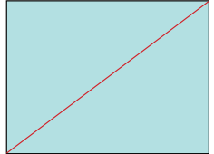
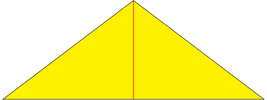
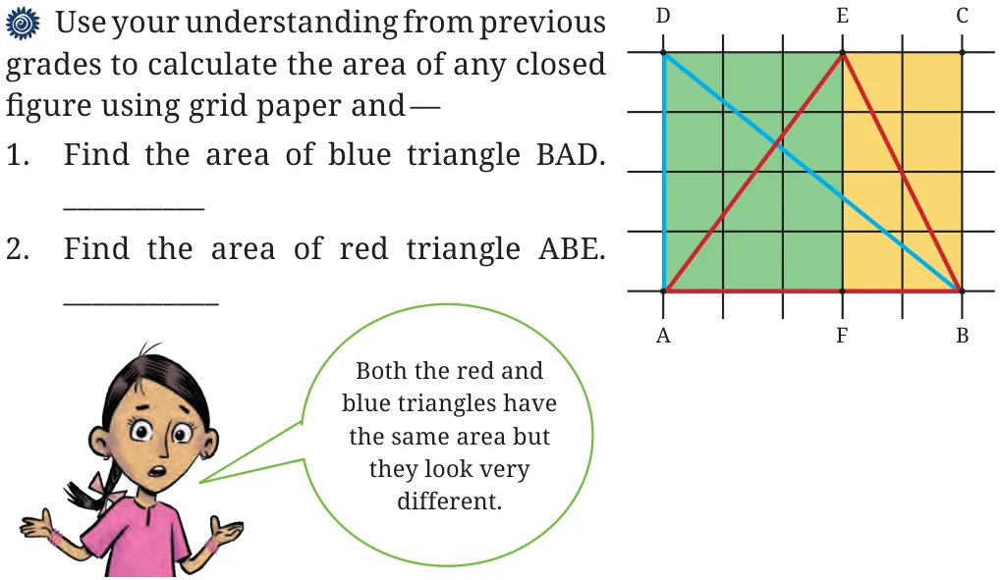
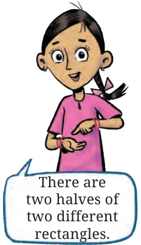
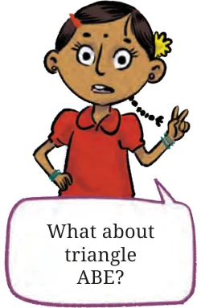

<!DOCTYPE html>
<html lang="en">
<head>
<meta charset="UTF-8">
<meta name="viewport" content="width=device-width,initial-scale=1">
<title>6.3 Area of a Triangle — Perimeter and Area</title>
<meta name="description" content="Class 6 Mathematics · Perimeter and Area · 6.3 Area of a Triangle">
<link rel="icon" href="data:image/svg+xml,<svg xmlns='http://www.w3.org/2000/svg' viewBox='0 0 100 100'><text y='.9em' font-size='90'>📘</text></svg>">
<link rel="stylesheet" href="../../../assets/book.css">
<link rel="stylesheet" href="https://cdn.jsdelivr.net/npm/katex@0.16.11/dist/katex.min.css" crossorigin="anonymous">
</head>
<body>
<header class="topbar">
<div class="topbar-in">
  <div class="crumb">
    <span class="c1"><a href="../../../index.html">Library</a> · <a href="../../index.html">Class 6 Mathematics</a></span>
    <span class="c2">Perimeter and Area · 6.3 Area of a Triangle</span>
  </div>
  <a class="tb-btn" data-nav="prev" href="../../06-perimeter-and-area/10-figure-it-out/index.html" title="Figure it Out">←</a>
  <details class="drawer"><summary class="tb-btn" title="Sections in this chapter">☰</summary>
<div class="drawer-panel"><div class="dh">Perimeter and Area</div><a href="../01-perimeter-6.1/index.html">6.1 Perimeter</a><a href="../02-perimeter-of-a-rectangle/index.html">Perimeter of a rectangle</a><a href="../03-perimeter-of-a-square/index.html">Perimeter of a square</a><a href="../04-perimeter-of-a-triangle/index.html">Perimeter of a triangle</a><a href="../05-figure-it-out/index.html">Figure it Out</a><a href="../06-figure-it-out/index.html">Figure it Out</a><a href="../07-perimeter-of-a-regular-polygon/index.html">Perimeter of a regular polygon</a><a href="../08-area-6.2/index.html">6.2 Area</a><a href="../09-figure-it-out/index.html">Figure it Out</a><a href="../10-figure-it-out/index.html">Figure it Out</a><a href="../11-area-of-a-triangle-6.3/index.html" aria-current="page">6.3 Area of a Triangle</a><a href="../12-figure-it-out/index.html">Figure it Out</a><a href="../13-figure-it-out/index.html">Figure it Out</a><a href="../14-summary/index.html">Summary</a><a href="../15-solutions/index.html">CHAPTER 6 — SOLUTIONS</a></div></details>
  <a class="tb-btn" data-nav="next" href="../../06-perimeter-and-area/12-figure-it-out/index.html" title="Figure it Out">→</a>
  <button class="tb-btn" data-theme-toggle title="Toggle light / dark" aria-label="Toggle light or dark theme">◐</button>
</div>
<div class="progress"><span style="width:52.6%"></span></div>
</header>
<main class="wrap">
<div class="sec-head">
  <p class="eyebrow"><a href="../index.html">Chapter 6 · Perimeter and Area</a></p>
  <h1>6.3 Area of a Triangle</h1>
  <p class="sec-meta">Textbook pages 14–16 · 6 figures</p>
</div>
<article class="prose">
<p>Draw a rectangle on a piece of paper and draw one of its diagonals. Cut the rectangle along that diagonal and get two triangles. Check! whether the two triangles overlap each other exactly. Do they have the same area? Try this with more rectangles having different dimensions. You can check this for a square as well. Can you draw any inferences from this exercise? Please write it here.</p>
<p>Now, see the figures below. Is the area of the blue rectangle more or less than the area of the yellow triangle? Or is it the same? Why?</p>
<figure class="fig"></figure>
<figure class="fig"></figure>
<p>Can you see some relationship between the blue rectangle and the yellow triangle and their areas? Write the relationship here.</p>
<p>Teacher’s Note</p>
<p>Help students in articulating their inferences and in defining the relationships they have observed in their own words, gradually leading to a common statement for whole classroom. Recall the definition of a diagonal in the classroom.</p>
<p>Draw suitable triangles on grid paper to verify your inferences and relationships observed in the above exercises.</p>
<figure class="fig table-fig wide"></figure>
<p>Area of rectangle \(ABCD =\) ________________ So, the area of triangle BAD is half of the area of the rectangle ABCD.</p>
<figure class="fig"></figure>
<figure class="fig"></figure>
<p>Area of triangle \(ABE =\) Area of triangle \(AEF +\) Area of triangle BEF. Here, the area of triangle \(AEF =\) half of the area of rectangle AFED. Similarly, the area of triangle \(BEF =\) half of the area of rectangle BFEC. Thus, the area of triangle \(ABE =\)  half of the area of rectangle \(AFED +\) half of the area of rectangle BFEC</p>
<aside class="sidenote"><p>= half of the sum of the areas of the rectangles AFED and \(BFEC =\) half of the area of rectangle ABCD.</p></aside>
<p>Conclusion ____________________________________________________</p>
<p>____________________________________________________</p>
</article>
<nav class="pager"><a class="" data-nav="prev" href="../../06-perimeter-and-area/10-figure-it-out/index.html"><span class="dir">← Previous</span><span class="t">Figure it Out</span><span class="ch">Perimeter and Area</span></a><a class="nx" data-nav="next" href="../../06-perimeter-and-area/12-figure-it-out/index.html"><span class="dir">Next →</span><span class="t">Figure it Out</span><span class="ch">Perimeter and Area</span></a></nav>
</main><footer class="site">Generated from the source textbook PDFs · text, figures and exercises belong to their respective publishers.</footer><script defer src="https://cdn.jsdelivr.net/npm/katex@0.16.11/dist/katex.min.js" crossorigin="anonymous"></script>
<script defer src="https://cdn.jsdelivr.net/npm/katex@0.16.11/dist/contrib/auto-render.min.js" crossorigin="anonymous"
  onload="renderMathInElement(document.body,{delimiters:[
    {left:'\\(',right:'\\)',display:false},
    {left:'$$',right:'$$',display:true},
    {left:'\\[',right:'\\]',display:true}],throwOnError:false,ignoredTags:['script','noscript','style','textarea','pre','code']})"></script>
<script src="../../../assets/book.js"></script>
</body>
</html>
